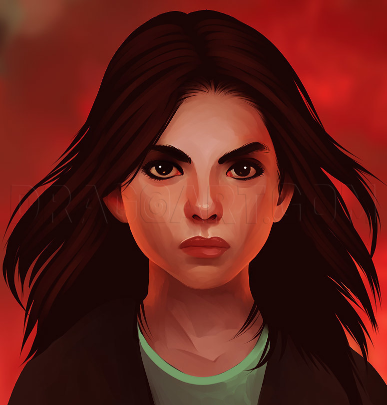
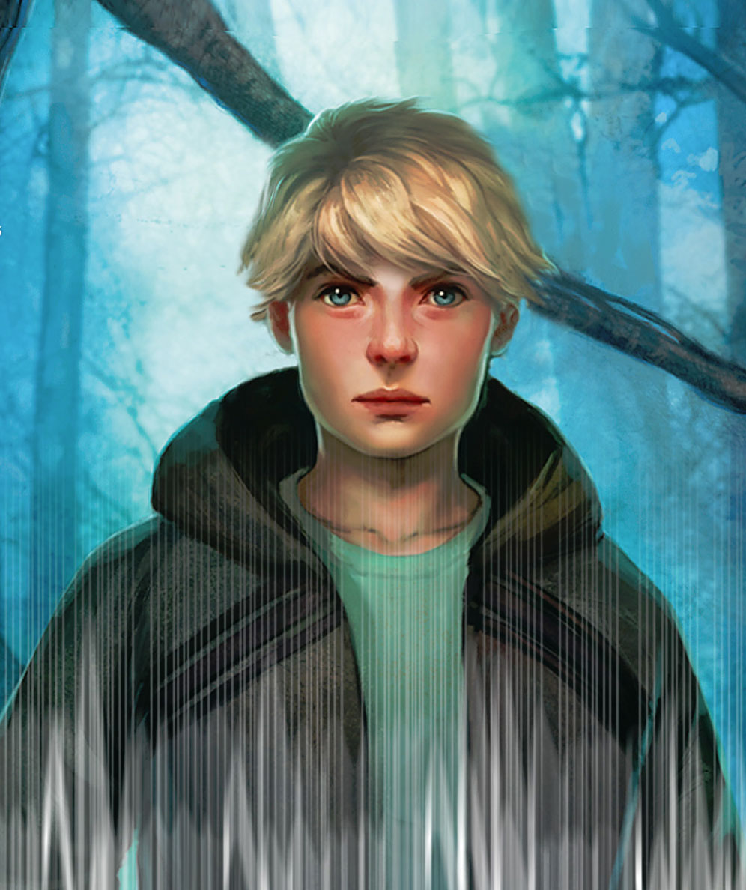
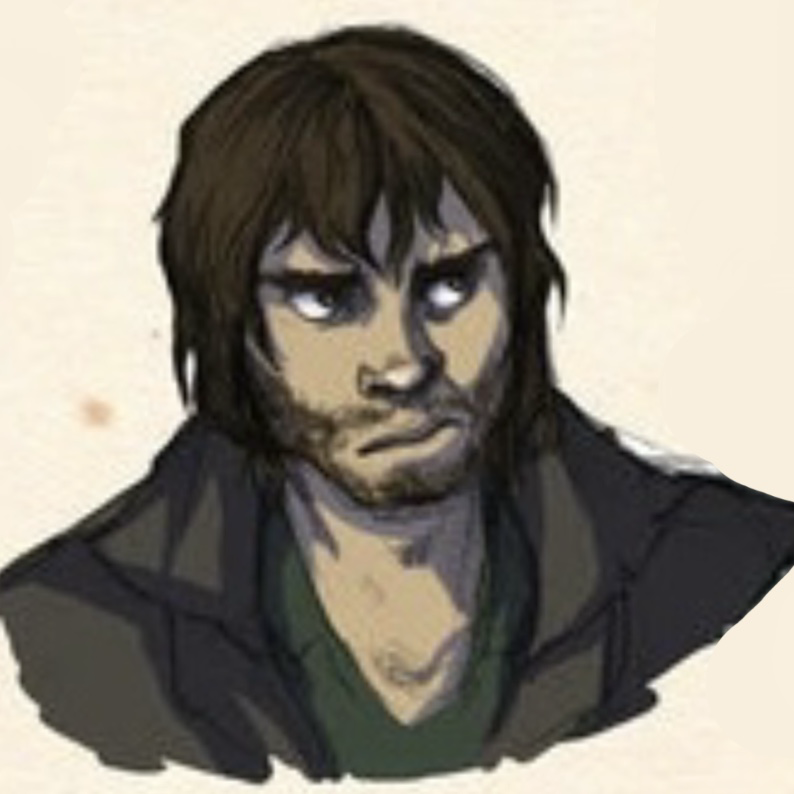

Katniss Everdeen
É a protagonista da história. Ela tem dezesseis anos e vive na área mais pobre do Distrito 12, conhecida como Costura ou Jazigo, com sua mãe e sua irmã de doze anos, Primrose, apelidada de Prim. O seu pai morreu numa explosão nas minas e, desde então, Katniss passou a sustentar e alimentar a família, visto que a sua mãe ficara com stress pós-traumático. Ela é descrita como tendo cabelos escuros, a pele cor de azeitona e os olhos cinzentos. Katniss e seu melhor amigo Gale caçam ilegalmente na floresta que circunda o Distrito 12 para sustentar suas famílias. Quando Prim é selecionada para os Jogos Vorazes, Katniss se voluntaria para ser o tributo feminino no lugar dela.

Peeta Mellark
É o tributo masculino do Distrito 12. Tem dezesseis anos, é filho de um padeiro e vive na parte média do seu distrito. É descrito como um dos poucos a ter alguma condição financeira naquele local. Tem cabelos loiros e olhos azuis, além de ser muito forte. Sua cor favorita é laranja, similar ao por-do-sol. Peeta salva a vida de Katniss várias vezes durante os Jogos e revela que se interessa por ela desde a primeira vez que a viu, mas não tinha coragem de lhe contar. É altamente persuasivo e bom com as palavras, como também um grande pintor.
